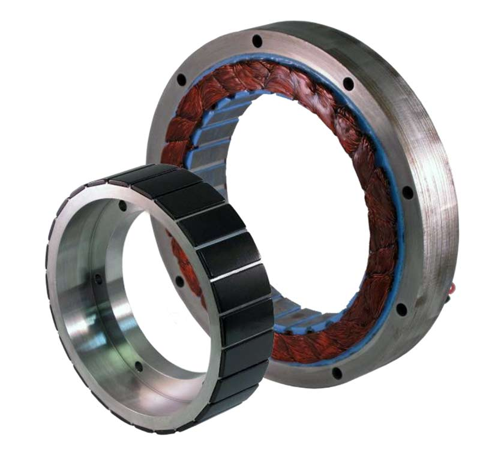

BRUSHLESS DC MOTOR
BRUSHLESS DC MOTOR
A Brushless DC motor (known as BLDC) is a permanent magnet synchronous electric motor which is driven by direct current(DC) and it accomplishes electroniclly controlled commutation system (commutation is the process of producing rotational torque in the motor by changing phase currents through it at appropriate times) instead of a mechanically coommutation system.BLDC motors are also referred as trapezoidal permanent magnet motors.Unlike conventional brushed type DC motors,wherein the brushes make the mechanical contact with commutator on the rotor so as to form an electric path between a DC electric source and rotor armature windings,BLDC motor employs electric commutation with permanent magnet rotor and a stator with a sequence of coils.In the motor,permanent magnet (or field poles) rotates and current carrying conductors are fixed.The armature coils are switched electronically by transistors or silicon controlled rectifiers at the correct rotor position in such a way that armature field is in space quadrature with the rotor field poles.Hence the fprce acting on the rotor causes it to rotate.Hall sensors or rotary encoders are most commonly used to sense the position of the rotor and are positioned around the stators.The rotor position feedback from the sensor helps to determine when to switch the armature current.This electronic communication arrangement eliminates the commutator arrangement and brushes in a DC motor and hence more reliable and less noisy operation is achieved.Due to the absence of brushes VLDC motors are capable to run at high speed.The efficiency of VLDC motors is typically 85 to 90%whereas as brushed type DC motors are 75 to 80% efficient.There are wide varities of Brushless DC motors available ranging from small power range to fractional horse power,integral horse power and large power ranges.
CONSTRUCTION OF BLDC MOTOR:

BLDC motors can be constructed in differnet physical configurations.depending on the stator windings,these can be configured as single-phase,two phase,or three-phase motors.However,three phase BLDC motors with permanent magnet rotor are most commonly used.The construction of this motor has similarities of three phase induction motor as well as conventional DC motor.This motor has stator and rotor parts as like all other motors.
- STATOR:
- -Stator of a BLDC motor made up of stacked steel laminations to carry the windings. These windings are placed in slots which are axially cut along the inner periphery of the stator. These windings can be arranged in either star or delta. However, most BLDC motors have three phase star connected stator.Each winding is constructed with numerous interconnected coils, where one or more coils are placed in each slot. In order to form an even number of poles, each of these windings is distributed over the stator periphery.The stator must be chosen with the correct rating of the voltage depending on the power supply capability. For robotics, automotive and small actuating applications, 48 V or less voltage BLDC motors are preferred. For industrial applications and automation systems, 100 V or higher rating motors are used.
- ROTOR:
- -BLDC motor incorporates a permanent magnet in the rotor. The number of poles in the rotor can vary from 2 to 8 pole pairs with alternate south and north poles depending on the application requirement. In order to achieve maximum torque in the motor, the flux density of the material should be high. A proper magnetic material for the rotor is needed to produce required magnetic field density.Ferrite magnets are inexpensive, however they have a low flux density for a given volume. Rare earth alloy magnets are commonly used for new designs. Some of these alloys are Samarium Cobalt (SmCo), Neodymium (Nd), and Ferrite and Boron (NdFeB). The rotor can be constructed with different core configurations such as the circular core with permanent magnet on the periphery, circular core with rectangular magnets, etc.
- HALL SENSORS:
- -Hall sensor provides the information to synchronize stator armature excitation with rotor position. Since the commutation of BLDC motor is controlled electronically, the stator windings should be energized in sequence in order to rotate the motor. Before energizing a particular stator winding, acknowledgment of rotor position is necessary. So the Hall Effect sensor embedded in stator senses the rotor position.
Most BLDC motors incorporate three Hall sensors which are embedded into the stator. Each sensor generates Low and High signals whenever the rotor poles pass near to it. The exact commutation sequence to the stator winding can be determined based on the combination of these three sensor’s response.
- WORKING PRINCIPLE OF BLDC:
- -BLDC motor works on the principle similar to that of a conventional DC motor, i.e., the Lorentz force law which states that whenever a current carrying conductor placed in a magnetic field it experiences a force. As a consequence of reaction force, the magnet will experience an equal and opposite force. In case BLDC motor, the current carrying conductor is stationary while the permanent magnet moves.When the stator coils are electrically switched by a supply source, it becomes electromagnet and starts producing the uniform field in the air gap. Though the source of supply is DC, switching makes to generate an AC voltage waveform with trapezoidal shape. Due to the force of interaction between electromagnet stator and permanent magnet rotor, the rotor continues to rotate.
ADVANTAGES:
- It has no mechanical commutator and associated problems
- High efficiency due to the use of permanent magnet rotor
- High speed of operation even in loaded and unloaded conditions due to the absence of brushes that limits the speed
- Smaller motor geometry and lighter in weight than both brushed type DC and induction AC motors
- Long life as no inspection and maintenance is required for commutator system
- Higher dynamic response due to low inertia and carrying windings in the stator
- Less electromagnetic interference
- Quite operation (or low noise) due to absence of brushes
DISADVANTAGES:
- These motors are costly
- Electronic controller required control this motor is expensive
- Not much availability of many integrated electronic control solutions, especially for tiny BLDC motors
- Requires complex drive circuitry
- Need of additional sensors
APPLICATIONS:
Brushless DC Motors (BLDC) are used for a wide variety of application requirements such as varying loads, constant loads and positioning applications in the fields of industrial control, automotive, aviation, automation systems, health care equipments, etc. Some specific applications of BLDC motors are
- Computer hard drives and DVD/CD players
- Electric vehicles, hybrid vehicles, and electric bicycles
- Industrial robots, CNC machine tools, and simple belt driven systems
- Washing machines, compressors and dryers
- Fans, pumps and blowers